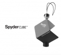

SpyderCube是首款多功能RAW圖像校準工具，能夠快速精確地完成校準，還能對高光和黑位進行包圍校準。 在设计中采用了ABS Cycoloy这种材料， 它防褪色，耐久性极强，还能抗燃/抗震， 此外，由树脂着色后成型加工以提高耐久性及通过精心的配方来获得最佳色值，包括为制作高色谱中性纯度的18%灰定义了新的标准，确保在任何光源下都能获得准确的色彩平衡。
很好用，用了它能有效提升工作效率，向高端摄影师迈进一步
准备，耐用
无
摄影棚必备神器！外拍带着他也比灰卡好用很多，就算不用挂在摄影包上装饰都很不错
做工很出色，18%灰度感觉比灰卡准确，配合软件后期设置白平衡准到爆，还能用来调节黑白照的色调，轻松拥有6级以上宽容度
暂时没有发现
沙发。这蜘蛛简直太好用了
比灰卡准确度高很多，后期用ACR调整白平衡效率高了很多，重要的是外形还能那么科幻那么骚，一个让入门小白不明觉厉的调色工具，做工也是很棒，看着很耐用，至少比灰卡耐用很多吧
价格是灰卡的十几倍